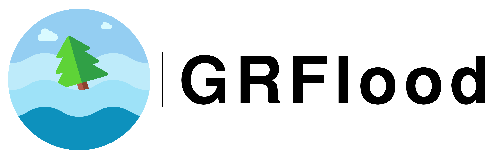

Package Name
GRFlood
Version
VERSION : 1.0.0
Authors
- AMIRA AYOUB Futur rural engineering and python developer.
- MOHAMED RAZZOUGUI Futur rural engineering and python developer.
- MISSER ABDELAALI Futur rural engineering and python developer.
- SOUASSI ISSAM Futur rural engineering and python developer.


